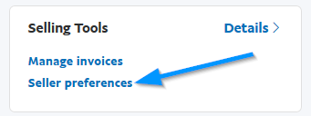
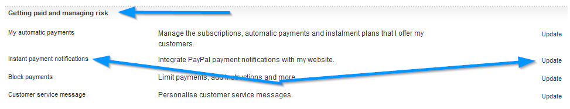
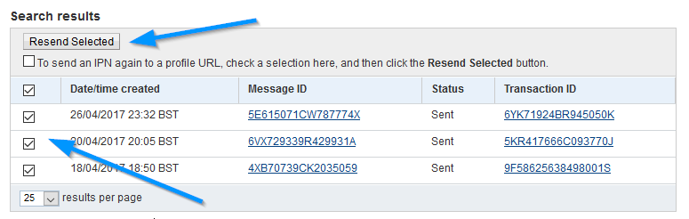
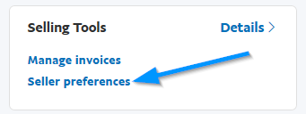
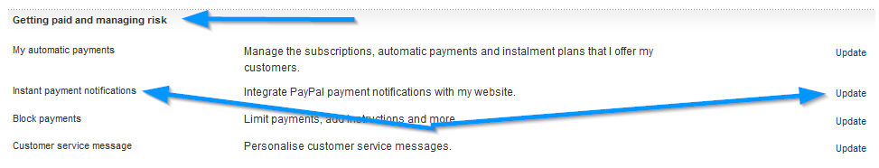
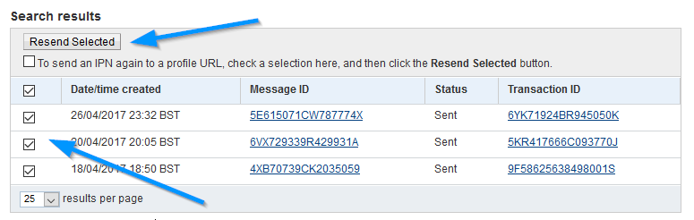

Paypal IPN
Gateway Setup
More info @ www.paypal.com
For details on how to set up the IPN (Instant Payment Notification) system in Paypal, click here.
For details on how to set up the IPN (Instant Payment Notification) system in Paypal, click here.
Business/Premier/Sandbox E-Mail Address
This is your business, premier or sandbox email account.
Paypal Page Style
Paypal lets you create a page style. If you have one that you wish to load for cart payments, specify its name here. Page styles are created in your Paypal account area. If unsure, leave blank.
Information About this Payment Method
This is presented to visitors if they click for more info on the gateway on the checkout page. Optional.
Use BB Code for formatting, HTML is not allowed.
Use BB Code for formatting, HTML is not allowed.
Order Status Preferences
Specify which order statuses to set for callback operations. Leave as default if you aren`t sure. "Pending" statuses restrict download access for none gateway methods and should
be used until payment is cleared.
Setting preferred order statuses can be useful for filtering with other admin operations.
Setting preferred order statuses can be useful for filtering with other admin operations.
Alternative Redirect Url (Optional)
Alternative redirect url is the page a visitor will be directed to after a successful transaction.
You should NOT use this option if you sell downloadable items as visitors will not be able to download their products immediately after purchase.
Enter full url starting http://
If you need to do further operations on your redirect page based on the sale, the following query string params may be used and passed to your new page:
{id} = Sale ID in Database
{code} = Sale Buy Code in Database.
Example:
http://www.example.com/new-redirect.php?id={id}&code={code}
You should NOT use this option if you sell downloadable items as visitors will not be able to download their products immediately after purchase.
Enter full url starting http://
If you need to do further operations on your redirect page based on the sale, the following query string params may be used and passed to your new page:
{id} = Sale ID in Database
{code} = Sale Buy Code in Database.
Example:
http://www.example.com/new-redirect.php?id={id}&code={code}
Live Payment URL
Live payment url. At the time of these docs it is:
https://www.paypal.com/cgi-bin/webscr?
The ? is important. This should not be changed unless altered by the gateway.
https://www.paypal.com/cgi-bin/webscr?
The ? is important. This should not be changed unless altered by the gateway.
Test/Sandbox Payment URL
Sandbox or test payment url. In many cases, this is the same as the live payment url. At the time of these docs it is:
https://www.sandbox.paypal.com/cgi-bin/webscr?
The ? is important. This should not be changed unless altered by the gateway
https://www.sandbox.paypal.com/cgi-bin/webscr?
The ? is important. This should not be changed unless altered by the gateway
Paypal Locale
Set Paypal Locale below if required. This may be required if you want to force a language display when users switch to Paypal to pay. Example:
EN = English.
Refer to Paypal for correct locale codes. This is optional.
EN = English.
Refer to Paypal for correct locale codes. This is optional.
Payment Method Availability
Choose when this payment method is available. Useful if you only want certain methods shown for certain checkout types. If none are selected, defaults to all.
Enable Paypal IPN
Enable / disable this gateway as a payment option.
Resend IPN Callback
It`s possible to resend an IPN transmission, which can be useful if your website went down at the time Paypal sent the callback response. To resend
a IPN message do the following:
[1] Log into your Paypal account.
[2] From the left menu, select 'Selling Tools > Seller Preferences'.

[3] From the next screen, select 'Getting paid and managing risk > Instant payment notifications > Update'.

[4] Click the 'IPN history page' link.

[5] Select the transmissions you want to resend and click 'Resend Selected'.

Done.
[1] Log into your Paypal account.
[2] From the left menu, select 'Selling Tools > Seller Preferences'.

[3] From the next screen, select 'Getting paid and managing risk > Instant payment notifications > Update'.

[4] Click the 'IPN history page' link.
[5] Select the transmissions you want to resend and click 'Resend Selected'.

Done.